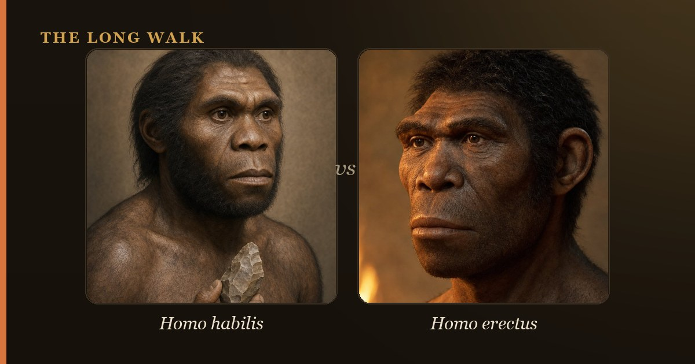

Homo habilis vs Homo erectus compares two early members of our genus. Homo habilis (about 2.3 to 1.4 million years ago) was small, with long arms and a brain of roughly 500 to 800 cc. Homo erectus (from about 2 million years ago) had a taller, modern-looking body and a brain that grew from about 550 to over 1,000 cc. They were once seen as ancestor and descendant, but fossils show they lived side by side for hundreds of thousands of years. Some researchers argue habilis is too ape-like to belong in Homo.

In 2007, Fred Spoor, Meave Leakey and colleagues described two fossils from Ileret, east of Lake Turkana in Kenya. One was a Homo habilis upper jaw about 1.44 million years old. The other was a small Homo erectus braincase about 1.55 million years old. If habilis had simply turned into erectus, the jaw should not exist. It was half a million years too late.
The Homo habilis vs Homo erectus comparison is best told through a handful of fossils like these, each of which changed what we thought. Here are six of them, in the order they were found.
1. OH 7 (1960): the handy man
Jonathan Leakey, Louis and Mary’s son, found a juvenile lower jaw and hand bones at Olduvai Gorge in 1960. In 1964, Louis Leakey, Phillip Tobias and John Napier made OH 7 the type specimen of Homo habilis, “handy man”. They argued that its larger brain and its hand, capable of a precision grip, made it the maker of the Oldowan stone tools found at the gorge.
The name stretched the definition of Homo to include a much smaller brain than before, and the argument over that decision has never fully ended. In 2015, a digital reconstruction of the crushed OH 7 jaw and skull led by Fred Spoor gave a brain size of roughly 730 to 820 cc, larger than older estimates. The same study suggested the habilis lineage began before 2.3 million years ago.
2. KNM-ER 1470 (1972): a second kind of early Homo
Bernard Ngeneo found the pieces of this skull at Koobi Fora, east of Lake Turkana, and Richard Leakey’s team assembled it. At around 2 million years old, it had a braincase of about 750 cc but a long, flat face with large cheek teeth. Many researchers now call it Homo rudolfensis. Face and jaw fossils described in 2012 support the idea that a second early-Homo form lived alongside habilis. Whether they are two species or one variable one is unresolved.
3. OH 62 (1986): a small body with long arms
Tim White and Donald Johanson’s team found a fragmentary skeleton at Olduvai, about 1.8 million years old, with teeth that match habilis. Its arm bones were long relative to its leg bones, a proportion closer to Lucy’s species than to ours. If the attribution is right, habilis kept an australopith-like body and probably still climbed often. The skeleton is very incomplete, so its limb proportions are debated.
4. KNM-WT 15000 (1984): the modern body arrives
Kamoya Kimeu spotted a fragment of skull west of Lake Turkana that led to the most complete early Homo skeleton known: the Nariokotome boy, about 1.5 million years old. Long legs, short arms, a narrow pelvis and modern body proportions made the contrast with OH 62 striking. This is the point where Homo habilis vs Homo erectus becomes a difference in how the body worked, not just in skull shape: erectus was committed to walking long distances on the ground. Growth lines in his teeth suggest he died at about 8 or 9 years old, already about 1.6 metres tall.
5. KNM-ER 42703 and 42700 (2007): living side by side
These are the Ileret fossils from the opening. The late habilis jaw shows that habilis did not disappear when erectus appeared. The small erectus skull, with a brain of under 700 cc, shows that erectus varied more in size than expected. Together they mean the two species overlapped in the Turkana Basin for something like half a million years, probably using different foods or habitats. Rather than parent and child, they look more like cousins descended from an earlier common ancestor.
6. DNH 134 (2020): erectus earlier than expected
At Drimolen in South Africa, a team led by Andy Herries and Stephanie Baker reconstructed the back of a child’s skull dated to about 2.04 to 1.95 million years ago. They identified it as Homo erectus, which would make it the oldest known, older than any East African specimen. The identification of such a young, partial skull is open to challenge, but if correct it means erectus appeared within a few hundred thousand years of the earliest habilis.
Homo habilis vs Homo erectus: what the six fossils add up to
| Trait | Homo habilis | Homo erectus |
|---|---|---|
| Time span | ~2.3 to ~1.4 million years ago | ~2.0 million to ~110,000 years ago |
| Range | East and possibly southern Africa | Africa, western Asia, China, Java |
| Brain | ~500–800 cc | ~550 cc early to over 1,000 cc later |
| Body | Small, relatively long arms | Tall, long legs, modern proportions |
| Teeth | Larger cheek teeth | Smaller cheek teeth relative to body |
| Tools | Oldowan | Oldowan, then Acheulean handaxes from ~1.76 Ma |
The brain ranges overlap, especially once the OH 7 reconstruction and the small Ileret skull are counted. The clearer difference is the body. Habilis looks like an australopith with a larger brain and smaller teeth. Erectus has the body plan later humans kept. The tools overlap too: both lived in landscapes full of Oldowan flakes, and stone tools at Lomekwi in Kenya, about 3.3 million years old, are older than either species.
Did diet separate them?
A popular explanation for the larger body and smaller teeth of erectus is that it ate more meat and other high-quality food. There is evidence that hominins were doing this around 2 million years ago. At Kanjera South in Kenya, stone tools and cut-marked bones show that small antelopes were being butchered. At a site near Koobi Fora dated to about 1.95 million years ago, hominins were eating fish, turtles and crocodiles. Tooth-wear studies suggest erectus ate a somewhat wider range of foods than habilis.
The picture is less clear than it seems. We usually cannot tell which species made the tools at these sites. In 2022, Andrew Barr and colleagues argued that the apparent rise in butchery evidence after erectus appears mainly reflects how many sites have been studied, not a real change in behaviour. Whether meat drove the changes in erectus is contested.
Should Homo habilis be in Homo at all?
In 1999, Bernard Wood and Mark Collard argued in Science that a genus should group species with a shared way of life. By that test, habilis and rudolfensis, with their small bodies, long arms and large chewing teeth, fit better in Australopithecus. On that view, Homo really begins with erectus.
Others keep habilis in Homo because of its smaller teeth, larger brain and its probable place near our ancestry. A jaw from Ledi-Geraru in Ethiopia, about 2.8 million years old, already shows Homo-like teeth, so the genus may be older than habilis itself. The boundary is a matter of definition as much as evidence, and it is why this comparison is still argued about.
For what came next, see Homo erectus vs Homo sapiens. For the other side of the family living at the same time, see Paranthropus vs Australopithecus.
See how Homo habilis and Homo erectus overlap in time, and where each sits at the start of our genus, on the interactive family tree.
Explore the family tree →Homo habilis vs Homo erectus FAQ
Did Homo habilis evolve into Homo erectus?
Probably not directly. A Homo habilis jaw from Ileret, Kenya, is about 1.44 million years old, long after Homo erectus appeared, so the two lived side by side. They more likely shared an earlier ancestor.
Why is Homo habilis called the handy man?
Louis Leakey, Phillip Tobias and John Napier named it in 1964 because they believed it made the Oldowan stone tools at Olduvai Gorge. Older tools have since been found, from about 3.3 million years ago.
What is the Turkana Boy?
KNM-WT 15000, also called the Nariokotome boy, is a nearly complete Homo erectus skeleton about 1.5 million years old, found west of Lake Turkana, Kenya, in 1984.
What is Homo rudolfensis?
An early Homo form based on the skull KNM-ER 1470 from Koobi Fora, Kenya, about 2 million years old. It has a larger braincase and a flatter face than habilis. Whether it is a separate species is debated.
How big was the brain of Homo habilis?
Estimates run from about 500 to 800 cc. A 2015 digital reconstruction of the type specimen, OH 7, gave about 730 to 820 cc.
- Spoor, F. et al. (2007). 'Implications of new early Homo fossils from Ileret, east of Lake Turkana, Kenya.' Nature 448. nature.com
- Spoor, F. et al. (2015). 'Reconstructed Homo habilis type OH 7 suggests deep-rooted species diversity in early Homo.' Nature 519. nature.com
- Herries, A. I. R. et al. (2020). 'Contemporaneity of Australopithecus, Paranthropus, and early Homo erectus in South Africa.' Science 368. science.org
- Wood, B. & Collard, M. (1999). 'The human genus.' Science 284.
- Johanson, D. C. et al. (1987). 'New partial skeleton of Homo habilis from Olduvai Gorge, Tanzania.' Nature 327.
- Barr, W. A. et al. (2022). 'No sustained increase in zooarchaeological evidence for carnivory after the appearance of Homo erectus.' PNAS 119. doi.org